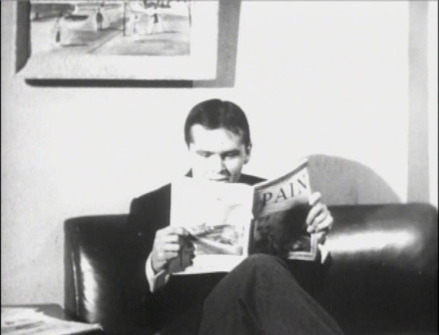

The Little Shop of Horrors, frame at 36:02
Roger Corman · 1960 · Film, black and white (frame)
Free to use
Jack Nicholson plays the dental patient. He had been in two films and later said he knew he had to be very quirky because Roger Corman had not wanted him. The film was pre-lit to save time, and in his scene the rented dental machinery began to tip over; Corman did not call cut, but caught the machine and moved to the next set. Corman did not copyright the film, and it entered the public domain.